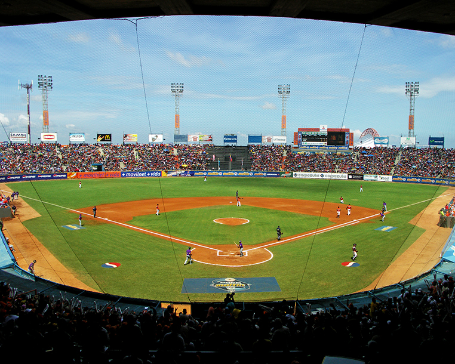
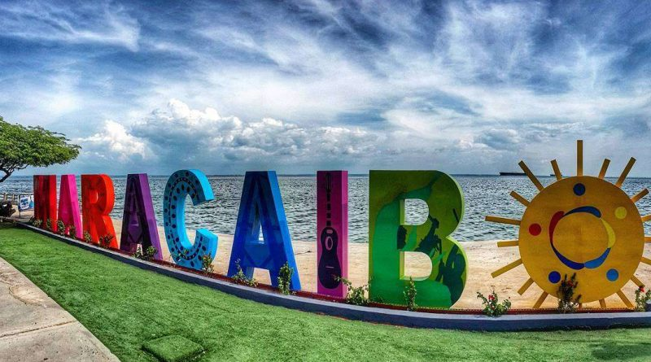

Estadio Luis Aparicio "El Grande"

El hogar de las Águilas del Zulia es el imponente Estadio Luis Aparicio "El Grande", ubicado en el complejo polideportivo de la ciudad. Nombrado en honor al legendario campocorto venezolano del Salón de la Fama, este estadio tiene capacidad para albergar a más de 23,000 fanáticos apasionados que llenan las gradas de energía, gaita y algarabía en cada temporada.
Maracaibo: La Tierra del Sol Amada

Maracaibo, capital del estado Zulia, es la segunda ciudad más importante de Venezuela. Conocida por su calor abrazador, el icónico Puente sobre el Lago, la devoción a la Virgen de Chiquinquirá (La Chinita) y su rica cultura musical. Es una ciudad vibrante donde el béisbol se vive como una religión y el ambiente festivo nunca se apaga.